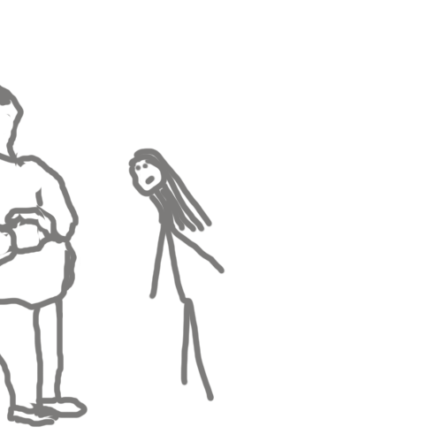

Замітка 1
...біжу додому, поспішаю... і раптом "щось" маленьке чорненьке буквально викатується на дорогу (Київ, жваве перехрестя). Я на "автоматі" хватаю те "щось" і бачу - кошеня! Зовсім маленьке, може місяць. Спасти спасла, а далі що? Куди його нести? Кого запитиати? Йду на всі сусідні стоянки, оббігаю магазинчикі - ніхто нічого не зна... Несу додому, згадую, що є сусідка, котра роками допомагає тваринам: лікує, стерілізує, годує. Маю надію, що ввечері зможу занести до неї. Поки чекаю вечора кошеня помила, нагодувала, нафотогрофувала. Віднесла, хух... Пізно ввечорі повертається з роботи чоловік, расказую, показую, хто в нас сьогодні був і що я кошеня занесла сусідці... наслухалась матюків і що як так можно було спасти і "кинути", краще б ти його взагалі не чіпала... 7:00 годин ранку, я під дверима сусідки - забрала!!! На сьогодні Асі вже 14років!
Дача. Діло до Нового 2020р. Весь грудень снігу майже не було, а за три дні повалив. Красииииииво! Випустила всіх пухнастиків на вулицю. Собаки повернулися, кицька Ася ще гуляє. Пізніше дивлюся ще раз, а на веранді сидить вже 2 кицьки... Що робити? Чиє воно? Вже пізно, холодно. Моя не заходить і та сидить - не ворушиться. Сидять як 2 форфорові вази. На сімейному підряді вирішили запустити гостю на ніч, а завтра розберемось. Кажу своїй заводь подружку. Вона зайшла і гостя за нею. ...гостя вийшла з хати через 2 місяці! погуляла і знов додому, ще через 2 місяці народилось 4 кошеня. Отак з'явилась Трьошка (три масті).
Майже ніч, чую щось у вікно дзинькнуло, дивлюся наче Трьошка з прогулянки прийшла. Вихожу запустити, а там воно - чуже кошеня. І куди його на ніч? Худе, мале, пищіть... думаю до ранку залишу, а там розберемося. Не розібралася. Назвала Сімкою. Через 40 днів пораюсь на вулиці і боковим зором бачу, наче Трьошка пробігла. Шось і смутило мене, але я була зайнята, то і забула про це. Через годину мама питає, чи бачила я кошеня на територіїї, таке гарненьке бла, бла, бла, на Трьошку схоже - я чуть не знепритомніла... боюся на вулицю вийти. Вечір, я за компом, до кімнати входить чоловік, а на руках у нього - Воно! Звідки? Хто? Що? Територія огорожена! і шо з ними усіма робити?.. а що я зроблю, якщо Сімка з'явилися в день коли наш друг загинув на війні (це пізніше дізналися), а Риська з'явилася на 40-й день після його загибелі... тепер у мене 4 киці!
Замітка 2
Було це навесні одного року. Я переїхала жити на дачу (поки тепло),
вирішила завести курей. Хлопці працюють, будують курятник, всі чимось
займаються, як раптом чоловік звертається до тещі:
-Акуліно
Петрівно, а чи нехочете ви шашличків?
-О-о із задоволенням!
-То поїдемте, тут поруч можно гарне м'ясо придбати. - поїхали,
не було їх хвилин 40. Приїхали! Забігає теща у кухню з мішком за
плечима, а мішок той ворушиться...
-Мамо, що це???
-Шашликі!
-Воно що, живе?
-Ну шось придумаємо!-І в цей момент відкриває мішка, а з відти
виходить маленьке перелякане козеня, таке мале наче мої пекінеси,
тільки що ніжки довші. Тут мене і переклиніло. Металевим голосом,
громко кажу:
-Грішу не трогать!
-А чому Грішу? -і тут вже ласкавим голосом промовляю:
-Не знаю
чому Гріша, але не чіпати, он картоплі з салом насмажте. - той Гріша
поняв, що його захищають і наче аж підріс. Йду до хлопців.
-Хлопці, стоп машина! Діліть курятника навпіл. Буде курятник і
козлятник...